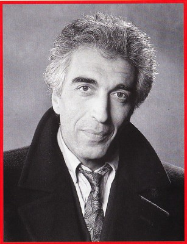

#3499 Betty Blue
Auszeichnungen: für 1 Oscars nominiert


 IMDB-Wertung: 7.4 / 10
IMDB-Wertung: 7.4 / 10  Metascore: 0
Metascore: 0 
Auf dem gleichnamigen Roman von Philippe Djian basierendes französisches Drama aus dem Jahr 1986 mit Béatrice Dalle in der Hauptrolle. Die junge Betty trifft auf den zehn Jahre älteren Lebenskünstler Zorg. Trotz großer gegenseitiger Anziehung gestaltet sich ihre Liebesbeziehung schwierig.
Jahr: 1986
Dauer: 184 Minuten
FSK: 16
Land: Frankreich Studio: Alive Vertrieb und MarketingTonspuren:
Untertitel:
Auflösung: 720p (1200x720) Größe: 5386 MB
Genre: Drama, Liebe
Regisseur: Jean-Jacques Beineix
Drehbuch: Peter Engelmann
Soundtrack:
Darsteller:
 Jean-Hugues Anglade als Zorg
Jean-Hugues Anglade als Zorg- Béatrice Dalle als Betty
 Vincent Lindon als Richard le jeune policier
Vincent Lindon als Richard le jeune policier Dominique Pinon als Le dealer / Dope dealer, complete version
Dominique Pinon als Le dealer / Dope dealer, complete version-  Gérard Darmon als Eddy
- Consuelo De Haviland als Lisa
- Clémentine Célarié als Annie
 Jacques Mathou als Bob
Jacques Mathou als Bob- Jean-Pierre Bisson als Le commissaire, complete version
- Bernard Hug als (complete version
- Catherine D'At als
- Claude Aufaure als Le médecin
- Louis Bellanti als Mario
- Dominique Besnehard als Client pizzeria
- Raoul Billerey als Le vieux policier
- Nathalie Dalyan als Maria
- Nicolas Jalowyj als Le petit Nicolas
- André Julien als Le vieux Georges
- Daniel Millot als
- Marthe Moudiki-Moreau als
- Bernard Robin als Deuxième locataire
- Claude Confortès als Propriétaire des bungalows
 Philippe Laudenbach als L'éditeur, Le gynéco
Philippe Laudenbach als L'éditeur, Le gynéco- Leonie Berthuit als La morte
- Frédéric Caratini als Archie
- Raymond Julien als Le vieux type décès
- Jacky Galibert als L'infirmier musclé
- Fabien Béhar als (complete version
- Simon de La Brosse als (complete version
- Franck-Olivier Bonnet als (complete version
- Eugène Berthier als (complete version
- Christine Datnowsky als (complete version
- Claude Duneton als (complete version
- Jessica Forde als (complete version
- Rabah Loucif als (complete version
- Bernadette Palas als (complete version
- Laurence Renn als (complete version
- Stéphane Verbiest als (complete version
Datei: X:\1986\Betty Blue (1986, FSK16, 1200x720).mkv seit 19.04.2016
Festplatte: HD 1980-1986
 Es gibt insgesamt 50 Filme in der Gruppe '1986'
Es gibt insgesamt 50 Filme in der Gruppe '1986'